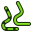

Contents
Introduzione
L'ambiente Path viene utilizzato per produrre delle istruzioni macchina di tipo CNC machines da un modello 3D di FreeCAD. Con questo si producono oggetti 3D reali su macchine CNC come fresatrici, torni, macchine a taglio laser o simili. In genere, le istruzioni sono in un dialetto G-Code

L'ambiente Path di FreeCAD crea le istruzioni macchina con il seguente flusso di lavoro:
- L'oggetto base è un modello 3D, che in genere viene creato utilizzando uno o più ambienti quali Part Design, Part o Draft.
- L'ambiente Path crea una Lavorazione. Essa contiene tutte le informazioni necessarie per generare il codice G necessario per eseguire il lavoro su una fresatrice CNC: c'è il pezzo di base (Stock), la fresatrice possiede un certo set di utensili e segue determinati comandi che controllano la velocità ed i movimenti (solitamente G-Code).
- Gli utensili vengono selezionati come richiesto dalle operazioni di lavorazione.
- I percorsi di fresatura sono creati utilizzando, ad es. le operazioni di Contornatura e Tasca. Questi oggetti Path utilizzano il dialetto G-Code interno di FreeCAD, indipendente dalla macchina CNC.
- Esportare la lavorazione con un codice G, corrispondente alla propria macchina.
Link per gli impazienti
Secondo il prorpio interesse per l'ambiente Path sono disponibili diversi argomenti per ulteriori letture:
- Un nuovo utente che sta cercando di familiarizzare con Path, può essere interessato ad un tutorial per una Esercitazione rapida.
- Se si dispone di una macchina speciale che non può utilizzare uno dei postprocessori disponibili, si consiglia di leggere come Personalizzare il post-processore
- Un utente esperto potrebbe voler scrivere una macro o automatizzare un processo che richiede di conoscere lo Scripting di Path
- Gli utenti esperti che desiderano semplificare il proprio flusso di lavoro possono aver bisogno di imparare come Personalizzare Path.
- I nuovi sviluppatori che vogliono contribuire a Path possono voler capire i Concetti principali di Path.
Concetti generali
L'ambiente Path genera un codice G che definisce i percorsi richiesti per fresare il progetto rappresentato dal modello 3D in codice interno, [the Path Job Operations FreeCAD G-Code dialect ], che viene successivamente tradotto nel dialetto appropriato per il controller CNC di destinazione selezionando il Postprocessore appropriato.
Il codice G è generato dalle direttive e dalle operazioni contenute in un percorso di lavorazione. Il flusso di lavorazione li elenca nell'ordine in cui verranno eseguiti. L'elenco può essere popolato aggiungendo Operazioni sui percorsi, Vestizioni dei percorsi, Comandi parziali dei percorsi e Modifiche ai percorsi, dal menu Path o dai pulsanti della GUI.
Path offre un Gestore degli utensili (Libreria, Tabella utensili), un ispettore del G-Code e strumenti di simulazione. Collega il Post Processore e consente di importare ed esportare i modelli di lavoro.
L'ambiente Path ha dipendenze esterne tra cui:
- Le unità del modello 3D di FreeCAD sono definite nelle impostazioni Unità → Preferenze ... → Generale → Unità di misura. La configurazione del postprocessore definisce le unità G-Code finali.
- Il percorso del file macro e le tolleranze geometriche sono definiti nella scheda Modifica → Preferenze ... → Path → Preferenze lavorazione.
- I colori sono definiti in Modifica → Preferenze ... → Path → scheda Colori Path.
- I parametri dei tag sono definiti nella scheda Modifica → Preferenze ... → Path → Dressups.
- Se la qualità del modello Base 3D supporta i requisiti del Path, supera la Verifica della geometria.
Units
Unit handling in Path can be confusing. There are several points to understand:
- FreeCAD base units for length and time are 'mm' and 's' respectively. Velocity is thus 'mm/s'. This is what FreeCAD stores internally regardless of anything else
- The default unit schema uses the default units. If you're using the default schema and you enter a feed rate without a unit string, it will get entered as 'mm/s'
- Most CNC machines expect feed rate in the form of either 'mm/min' or 'in/min'. Most post-processors will automatically convert the unit when generating gcode.
Schemas:
- Changing schema in preferences changes default unit string for the input fields. If you're a Path user and prefer to design in metric, it's highly recommended that you use the "Metric Small Parts & CNC" schema. If you design in US units, either the Imperial Decimal and Building US will work
- Changing your preferred unit schema will have no effect on output but will help avoid input errors
Output:
- Generating the correct unit in output is the responsibility of the post-processor and is done only at that time
- Machine output unit is completely unrelated to your selected unit schema
- Post-processors produce either metric (G21) output, Imperial (G20) output or are configurable.
- Configurable post-processors default to metric (G21)
- If you want your configurable post-processor to output imperial gcode (G20), Set the correct argument in your job output configation (ie --inches for linuxcnc). This can be stored in a job template and set as your default template to make it automatic for all future jobs
Path Inspection:
- If you use the Path Inspect tool to look at g-code, you will see it in 'mm/s' because it is not being post-processed
I comandi di Path
Questi comandi sono usati per impostare un progetto CNC e gestire i modelli.
Lavorazione
-
 Lavorazione: Crea una nuova lavorazione CNC
Lavorazione: Crea una nuova lavorazione CNC
-
 Post elaborazione: Esporta un progetto in G-code
Post elaborazione: Esporta un progetto in G-code
-
 Esporta modello: Esporta la lavorazione corrente come modello
Esporta modello: Esporta la lavorazione corrente come modello
- Ispeziona G-Code: Mostra il codice G per il controllo
{kind=link}
-
 Simulatore CAM: Mostra l'operazione di fresatura così come viene eseguita sulla macchina
Simulatore CAM: Mostra l'operazione di fresatura così come viene eseguita sulla macchina
-
 Gestione utensili: Gestisce gli utensili
Gestione utensili: Gestisce gli utensili
-
 Chiudi il ciclo: Completa un ciclo basato su due bordi selezionati
Chiudi il ciclo: Completa un ciclo basato su due bordi selezionati
-
 Contornatura: Crea un percorso del contornatura dell'oggetto base
Contornatura: Crea un percorso del contornatura dell'oggetto base
-
 Profila faccia: Crea un percorso di profilatura da una faccia selezionata
Profila faccia: Crea un percorso di profilatura da una faccia selezionata
-
 Profila bordi: Crea un percorso di profilatura dai bordi selezionati
Profila bordi: Crea un percorso di profilatura dai bordi selezionati
-
 Tasca: Crea un'operazione di scavo da una o più tasche selezionate
Tasca: Crea un'operazione di scavo da una o più tasche selezionate
-
 Foratura: Esegue un ciclo di perforazione
Foratura: Esegue un ciclo di perforazione
-
 Incisione: Crea un percorso di incisione
Incisione: Crea un percorso di incisione
-
 Sfacciatura: Crea un percorso di sfacciatura
Sfacciatura: Crea un percorso di sfacciatura
-
 Elica: Crea un percorso elicoidale
Elica: Crea un percorso elicoidale
- Cavità 3D: Crea un percorso per una cavità 3D
{kind=link}
Vestizioni
-
 Vestizione Dogbone: Aggiunge una modifica di vestizione osso-di-cane (dogbone) ad un percorso selezionato
Vestizione Dogbone: Aggiunge una modifica di vestizione osso-di-cane (dogbone) ad un percorso selezionato
- Vestizione Dragknife: Aggiunge una modifica di vestizione trascina-lama (dragknife) a un percorso selezionato
- Lead In Dressup: Aggiunge un punto di entrata o di uscita a un percorso selezionato
- Rampa di ingresso: Aggiunge la modifica di vestizione Rampa di ingresso a un percorso selezionato
- Etichetta di vestizione: Adds a holding tag dressup modification to a selected path
Comandi parziali
- Fissaggio: Cambia la posizione di fissaggio
{kind=link}
-
 Commento: Inserisce un commento nel codice G di un percorso
Commento: Inserisce un commento nel codice G di un percorso
-
 Stop: Inserisce un punto di fermo macchina
Stop: Inserisce un punto di fermo macchina
-
 Personalizza: Inserisce del codice G personalizzato
Personalizza: Inserisce del codice G personalizzato
-
 Da una Forma: Crea un oggetto percorso da un oggetto Parte selezionato
Da una Forma: Crea un oggetto percorso da un oggetto Parte selezionato
Modifica percorso
-
 Copia: Crea una copia parametrica di un oggetto percorso selezionato
Copia: Crea una copia parametrica di un oggetto percorso selezionato
-
 Schiera: Crea una schiera duplicando un percorso selezionato
Schiera: Crea una schiera duplicando un percorso selezionato
-  Copia semplice: Crea una copia non parametrica di un oggetto percorso selezionato
{kind=link}
Altro
- Sfacciatura 3D: Crea un percorso per una sfacciatura 3D
{kind=link}
-
 Feature area: Creates a feature area from selected objects
Feature area: Creates a feature area from selected objects
-
 Feature area workplane: Creates a feature area workplane
Feature area workplane: Creates a feature area workplane
-
 Errori nel percorso: Controlla la lavorazione selezionata alla ricerca di valori mancanti
Errori nel percorso: Controlla la lavorazione selezionata alla ricerca di valori mancanti
preferenze
-
 Preferenze...: Preferenze disponibili negli strumenti Path.
Preferenze...: Preferenze disponibili negli strumenti Path.
Script
L'ambiente Path offre una vasta gamma di script API in python. Con gli script python è possibile creare e modificare i percorsi, o estendere le funzionalità disponibili nell'ambiente.
FAQ
L'ambiente Path condivide molti concetti con altri pacchetti software CAM ma ha le sue peculiarità. Se qualcosa sembra sbagliato, questo potrebbe essere un buon punto di partenza.